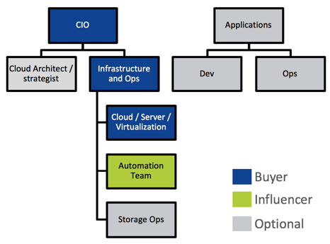
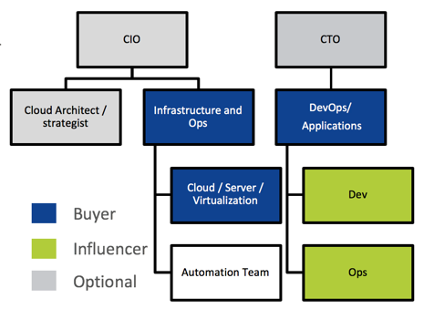
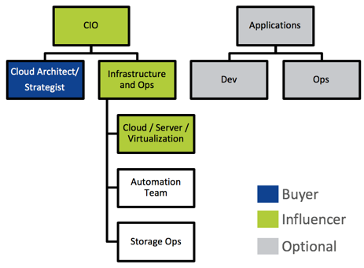
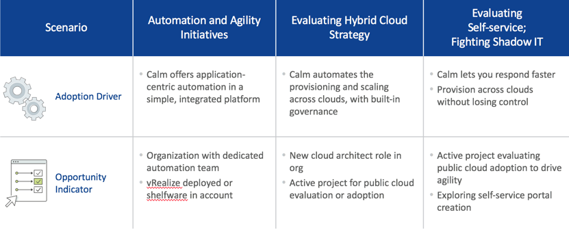

-
- What Is Calm
- Selling Calm
Nutanix Calm
Nutanix Calm Lab
Appendix
In this section we will look at how to sell Nutanix Calm. What to look for with different types of teams, and how we can help them.
Looking for:
Looking for:



